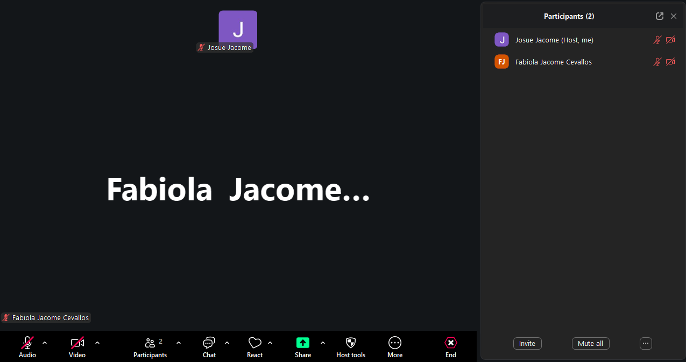
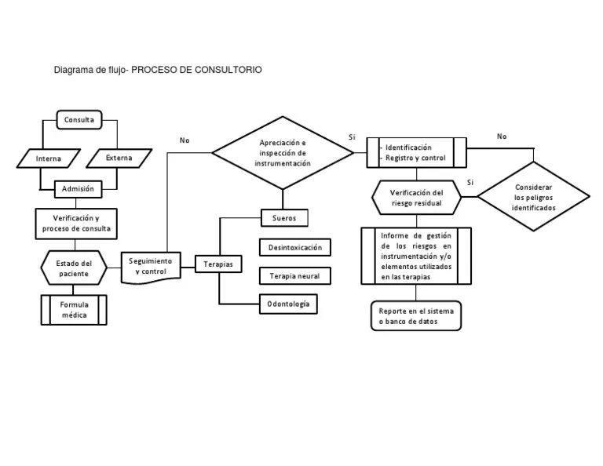
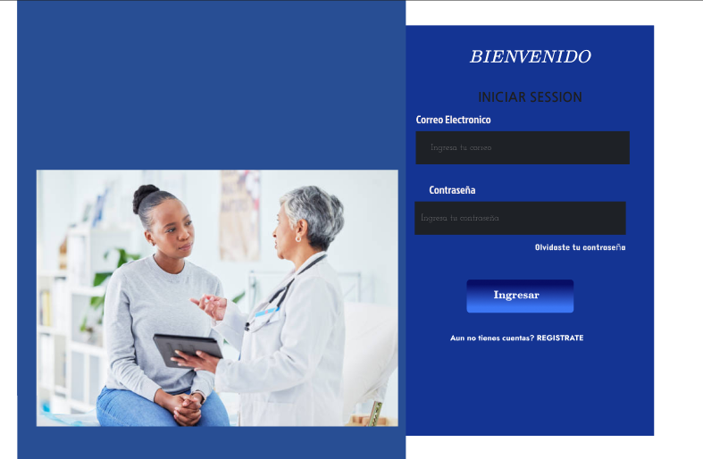
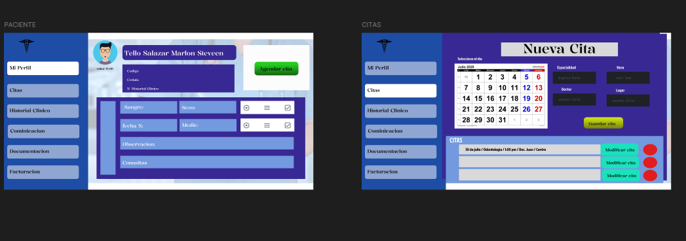
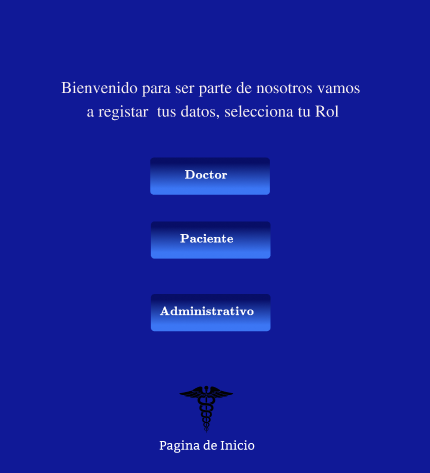
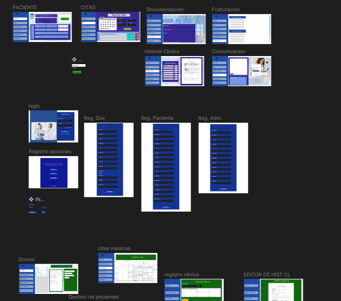

Examen Final: Sistema para Consultorio Médico
Proyecto enfocado en mejorar el manejo de pacientes y datos clínicos de un consultorio que actualmente trabaja con Excel y métodos manuales.
⬅ Volver al inicio📱 Fases del Proyecto
A continuación se documenta el proceso desde el contacto inicial hasta el diseño de la solución.
1) Contacto inicial con el cliente
Se contactó con un consultorio médico ubicado en Calderón, el cual aún maneja toda su base de datos y clientes por medio de Excel y programas anticuados. Se preguntó qué problemas han tenido y si les gustaría un mejor programa para organizar todo lo relacionado con eso.
2) Realizar la primera reunión
Se realizó una primera reunión con el consultorio para conocer su situación actual y entender el problema.
🖼️ Captura de pantalla (Reunión)

Captura de la primera reunión donde se levantó información del consultorio y su problema con Excel.
3) Escuchar qué necesita y por qué
El consultorio tiene problemas con su base de datos de clientes: muchos datos se pierden, algunas veces se anotan en papeles y luego se pierden. Además, los archivos de Excel se pueden borrar o perder con facilidad, lo cual no es eficiente. Buscan una solución que sea fácil de entender, sin muchas complicaciones para implementar, que permita migrar lo que ya tienen y que también ayude a los clientes a tener números de contacto y facilidades de comunicación con la doctora.
🚨 Problemas actuales
- Pérdida de información (papeles / Excel)
- Duplicación o inconsistencia de datos
- Dificultad para buscar historial del paciente
- Organización manual y lenta
🎯 Objetivo de la solución
- Sistema centralizado y seguro
- Registro claro y rápido
- Historial médico ordenado
- Contacto sencillo con el consultorio
4) Hacer preguntas para entender el problema
Preguntas realizadas para levantar información (se dejan sin respuesta).
- ¿Cuántos pacientes atienden mensualmente en promedio?
- ¿Cuántos pacientes nuevos registran por semana?
- ¿Qué datos guardan actualmente en su base de Excel (campos)?
- ¿Cuántos registros (filas) tiene la base de datos actual aproximadamente?
- ¿Con qué frecuencia se pierde información o se duplican datos?
- ¿Quiénes tienen acceso a los archivos de Excel actualmente?
- ¿Cómo registran pagos (depósitos) y cómo verifican esos datos?
- ¿Qué tipo de consultas realizan (general, radiografías, etc.) y qué información necesitan guardar?
- ¿Qué problemas han tenido al buscar historiales de pacientes antiguos?
- ¿Necesitan reportes (por fecha, por paciente, por ingresos) y cuáles serían los más importantes?
5) Levantamiento de requisitos
Con base en los problemas identificados, se levantan los siguientes requisitos:
✅ Requisitos funcionales
- Registrar pacientes (crear, editar, eliminar).
- Buscar pacientes por nombre, cédula o teléfono.
- Guardar historial de consultas y motivo de visita.
- Registrar pagos/depósitos por consulta.
- Agendar citas y ver agenda por día.
- Exportar o respaldar la información (para evitar pérdidas).
- Mostrar información de contacto del consultorio a los pacientes.
⭐ Requisitos no funcionales
- Interfaz simple y fácil de entender.
- Seguridad: acceso con credenciales (llave maestra para administración).
- Respaldo automático o manual de base de datos.
- Rápido acceso a datos (búsqueda eficiente).
- Compatibilidad web (PC / celular).
6) Identificar usuarios del sistema
👩⚕️ Personal del consultorio
Doctora / asistente encargada de registrar pacientes, consultas y pagos.
🧑🤝🧑 Pacientes
Personas que se quieren atender en una cita médica (consulta, radiografías, etc.).
7) Definir funciones principales y secundarias
✅ Funciones principales
- Registro de pacientes y datos básicos.
- Base de datos interna para consultas e historial.
- Búsqueda rápida de pacientes.
- Registro de pagos/depósitos.
⭐ Funciones secundarias
- Sección pública para que las personas contacten con la doctora.
- Agenda de citas por día/semana.
- Exportación y respaldo en archivo (seguridad).
- Reporte simple (ingresos / pacientes atendidos).
8) Especificar pantallas necesarias
- Página web pública: información del consultorio + contacto.
- Pantalla de registro de pacientes: formulario para crear/editar.
- Panel interno: lista de pacientes, historial y pagos.
- Acceso administrador: “llave maestra” para ver/gestionar todo.
9) Determinar qué datos se guardarán
📦 Datos del paciente y consulta
- Nombres y apellidos
- Cédula / Identificación
- Teléfono y/o WhatsApp
- Dirección (opcional)
- Fecha de consulta / cita
- Motivo de visita / diagnóstico (según el consultorio)
- Tratamiento / observaciones
- Depósito / pago realizado
- Historial de visitas (para futuras consultas)
10) Establecer restricciones
- Privacidad: solo personal autorizado puede ver datos sensibles.
- Acceso: panel interno protegido con usuario/contraseña y llave maestra.
- Respaldo: debe existir copia de seguridad para evitar pérdida de información.
- Integridad: evitar registros duplicados (por cédula o teléfono).
- Usabilidad: debe ser simple para personal no técnico.
- Disponibilidad: el sistema debe funcionar incluso con internet inestable (modo simple o respaldo local si se implementa).
📌 Análisis del problema
Se analizan procesos actuales, reglas del negocio y representación visual del flujo.
11) Definir procesos y reglas de negocio
🔁 Procesos principales
- Registro o búsqueda del paciente.
- Agendamiento o confirmación de cita.
- Registro de consulta (motivo, observación, tratamiento).
- Registro de pago/depósito.
- Generación de historial y seguimiento.
- Respaldo periódico de información.
📏 Reglas de negocio
- No se puede registrar una consulta sin paciente registrado.
- La cédula debe ser única por paciente (evitar duplicados).
- Todo pago debe estar asociado a una consulta o cita.
- Solo el administrador puede eliminar registros.
- Las ediciones deben quedar registradas (quién y cuándo) si se implementa auditoría.
12) Crear diagramas de flujo
🖼️ Diagrama de flujo (Proceso de atención)

13) Desarrollar casos de uso
CU01 — Registrar paciente
Actor: Personal del consultorio
Precondición: Personal autenticado.
Flujo principal: Ingresar datos → Validar → Guardar → Confirmar.
Postcondición: Paciente registrado en la base de datos.
CU02 — Buscar paciente
Actor: Personal del consultorio
Precondición: Personal autenticado.
Flujo principal: Ingresar criterio (cédula/nombre/teléfono) → Mostrar resultados → Seleccionar paciente.
Postcondición: Paciente encontrado y listo para consulta.
CU03 — Registrar consulta
Actor: Doctora / Personal
Precondición: Paciente existente.
Flujo principal: Seleccionar paciente → Ingresar motivo/observaciones → Guardar consulta.
Postcondición: Consulta registrada en el historial.
CU04 — Registrar pago/depósito
Actor: Personal del consultorio
Precondición: Consulta registrada o cita generada.
Flujo principal: Seleccionar consulta → Ingresar monto → Guardar pago → Confirmar.
Postcondición: Pago vinculado a la consulta.
CU05 — Ver historial del paciente
Actor: Doctora / Personal
Precondición: Paciente registrado.
Flujo principal: Buscar paciente → Abrir historial → Ver consultas anteriores.
Postcondición: Historial mostrado correctamente.
CU06 — Administración (llave maestra)
Actor: Administrador
Precondición: Autenticación con llave maestra.
Flujo principal: Ingresar llave → Acceder panel completo → Gestionar usuarios/datos → Guardar cambios.
Postcondición: Cambios aplicados con control de permisos.
🎨 Diseño de la solución
Se plantean bocetos, prototipos y una idea de arquitectura para implementar el sistema.
14) Crear wireframes (bocetos)
🖼️ Wireframe: Página web pública

No se encontró la imagen: imagenes/webpublico.png';" />15) Diseñar prototipos en Figma
🖼️ Captura: Prototipo en Figma

No se encontró: img/prototipo.png';" />🖼️ Captura: Interacciones (Prototype)

No se encontró: img/registro.png';" />16) Definir arquitectura del sistema
Se define una arquitectura web simple y escalable que permite centralizar la información del consultorio médico, evitando el uso de archivos Excel y mejorando la seguridad de los datos.
🖼️ Diagrama de arquitectura del sistema

📌 Componentes de la ar
📌 Idea simple de arquitectura (texto)
- Frontend Web: interfaz para pacientes y panel para el consultorio.
- Backend (API): maneja registros, consultas, pagos y autenticación.
- Base de datos: guarda pacientes, historial, citas y pagos con respaldo.
- Seguridad: roles (admin/personal) y llave maestra para acciones críticas.
📌 Idea simple de arquitectura (texto)
- Frontend Web: interfaz para pacientes y panel para el consultorio.
- Backend (API): maneja registros, consultas, pagos y autenticación.
- Base de datos: guarda pacientes, historial, citas y pagos con respaldo.
- Seguridad: roles (admin/personal) y llave maestra para acciones críticas.